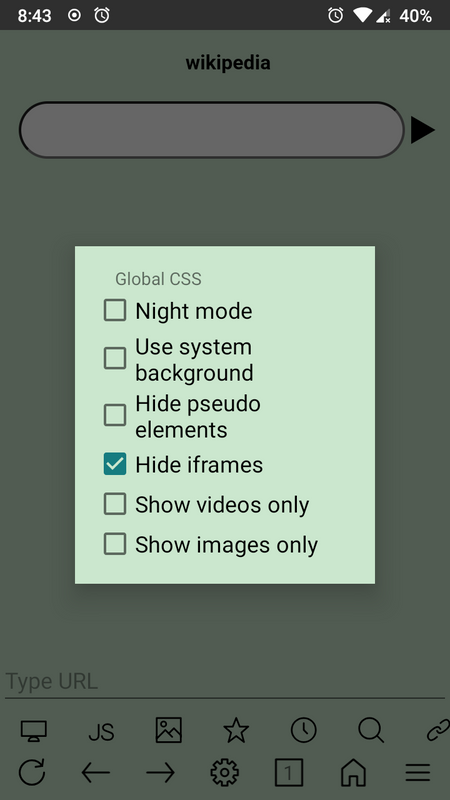
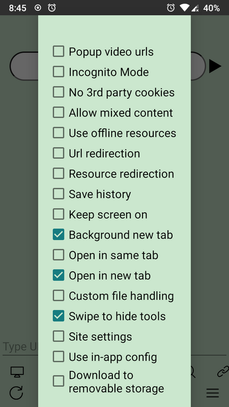

uWeb 版本进化史：一个 226KB 浏览器的十年迭代哲学
从极简内核到三大扩展体系，uWeb 用十余年迭代证明了"少即是多"的浏览器设计哲学。本文从版本演进的角度复盘这款极客浏览器的成长轨迹。
开头：现在这版它是什么样
我最近把手机上的浏览器换成了 uWeb。这款浏览器在官网上对自己的定位很明确——面向极客的 Android 轻量开源浏览器。说出来你可能不信，它的核心 APK 只有 226KB，安装包从下载拿就是这个数，不是 226MB，是 KB。装完算上内置资源和配置，整体包体积也才 12.5MB。对比一下身边动辄几十上百 MB 的 Chrome 和 Firefox，这个数字小到有点离谱。
但真正让我震惊的不是体积，而是能力。长按底部那个小小的图像按钮，弹出的菜单里藏着翻译、比价、网页归档、视频解析、PDF 转换等一整套自动化工具，而且每一项都可以自定义。地址栏输入 ! 加指令，能直接执行 shell 级别的操作。甚至可以把配置好的操作保存成"超级书签"，下次一键恢复。

这就引出一个让我好奇的问题：uWeb 是怎么走到今天的？这么小的内核，怎么装得下这么多玩法？翻了一遍uWeb文档里的版本记录和配置体系的演进脉络，我发现它的迭代逻辑跟主流浏览器完全不一样。
来路：从极简内核到三大扩展体系
早期：一个只有 400KB 的浏览器
样本文档没有给出具体的发布日期，但从配置文件体系的复杂度倒推，uWeb 的早期版本应该只实现了最核心的浏览功能。那时的定位很简单——给极客用户一个轻量、可定制的 Android 浏览器。
早期版本的局限也很明显：没有特色服务体系，没有配置文件，没有 HTML5 应用。所有的个性化需求都要靠改源码重新编译来实现。对于追求极致轻量的开发者来说，这反而是对的——内核保持最小化，扩展能力通过开放接口逐步叠加。
1144 版本：一个被低估的转折点
在 default.urls 配置文档里我看到一个很有意思的注释：1144 版本以前，URL 末尾的 %u 是必须的。这是 uWeb 文档里少有的、直接用版本号标注的兼容性变更。
不要小看这个改动。在 1144 版本之前，特色服务的 URL 模板必须以 %u 结尾，写反了就报错。而 1144 版本之后，%u 可以放在 URL 的任何位置，甚至可以省略。这个改动看似只是解析器的一个小升级，背后反映的是整个特色服务体系从"硬编码的规则"到"灵活的模板引擎"的转变。

这大概是 uWeb 从"工具"到"平台"的标志性一步。模板引擎的引入，使得特色服务可以做更复杂的事情——比如在 URL 中间插入参数、组合多个占位符、甚至处理编码转换。翻译、比价、归档、视频解析这些今天耳熟能详的特色服务，都是在 1144 版本之后才真正大规模普及的。
三大扩展体系的成型
1144 版本之后的几个迭代周期，uWeb 的三大扩展体系逐步成熟：
JavaScript 脚本体系：全局脚本、域名特定脚本（类似油猴的 sitejs/ 目录）、临时 bookmarklet 脚本，三个层次覆盖了从全站到单域名再到一次性操作的所有场景。脚本激活模式的加入，让脚本可以自动作用于同类网址——访问外文页面时自动触发翻译，就是这个机制的典型应用。
配置文件体系：几十个 default.* 配置文件控制着菜单、按钮、地址栏、重定向、文件关联、编码切换等几乎所有行为。你想换一个搜索引擎？改 default.search 就行。你想把 Google 自动重定向到国内镜像？改 default.redirect。特色服务的菜单项全部来自 default.urls，纯文件驱动，不需要重启浏览器进程。
HTML5 应用体系：PDF 阅读器、EPUB 阅读器、字典、视频播放器、超大文件阅读器（txtview 和 markdeep）。这些都是 PWA 形式的增强应用，放在 app/ 目录下，通过 file:/// 协议直接在浏览器内运行。特别是 txtview，用偏移量分段读取的方式让几十 MB 甚至上百 MB 的大文件秒级打开——Android 自带文本编辑器碰到这种文件直接闪退，但 uWeb 能流畅跳转。
这三套体系加在一起，就是 uWeb 的核心竞争力。主流浏览器选择"扩展商店"作为扩展入口，uWeb 选择"文件系统 + 脚本引擎"。前者对普通用户友好，后者对极客来说是无限可能。
Termux 集成：终极武器
三大体系之上，还有一个"终极武器"——Termux 深度集成。这个功能在样本文档里被单独列为一个大章节，意味着它不是一个可选的附加项，而是 uWeb 定位的关键一环。
浏览器调用 shell 命令、让 shell 脚本控制浏览器行为、在浏览器和 Termux 之间传递文件和 URL——这条通路打通之后，uWeb 已经不再是一个普通浏览器，而是 Android 上的一个前端壳。你可以用 shell 脚本批量处理网页、用 Python 爬取内容、用 grep 在浏览器输出里搜索关键词。
规律：从迭代节奏看团队的优先级
翻完所有配置体系和版本线索，我注意到一个很明显的规律：uWeb 的团队一直在死磕"扩展能力的开放"，而不是"内置功能的丰富"。
十余年迭代下来，主流浏览器加了什么？加了原生广告拦截、加了翻译面板、加了密码管理器、加了 WebRTC、加了 AI 助手。uWeb 呢？它没加任何一个。翻译不做内置的，而是跳转第三方翻译服务的网页版，用 default.urls 配置。广告拦截不靠内置引擎，靠 JavaScript 脚本或重定向规则。密码管理器？没有——但你可以用 HTML5 应用自己装一个。
这种策略的好处是核心 APK 永远维持在极小体积。坏处是新用户上手成本极高——你需要同时理解脚本、配置文件、HTML5 应用三套体系，才能真正用好这款浏览器。但团队显然不在乎这个：从 default.urls 文档里精心编写的配置示例、从官方文档站 20+ 个镜像的部署方式、从 Gitee 安卓浏览器主题下持续活跃的社区分享来看，uWeb 从一开始就没打算做一款面向大众的产品。
他们面向的是这样一群人：愿意花半小时研究配置文件格式，愿意写几行 JavaScript 让浏览器自动翻译外文页面，愿意用 shell 脚本把日常浏览变成流水线。这些人不需要一个"开箱即用"的浏览器，他们需要一个"可以被编程"的浏览器。
还有一个细节值得注意：uWeb 的重定向体系——default.redirect 可以把任意域名映射到另一个域名。文档里明确提到这是为国内用户准备的，Google 系服务（translate.google.com 除外）可以自动重定向到国内镜像。这在主流浏览器里要么需要安装扩展，要么根本不支持。
预判：照这个路线，下一步大概率的走向
说几点从迭代规律推的预判，不当官方口径传。
第一，Termux 集成的深度会继续加强。这是三大扩展体系之上的"第四层"，把浏览器能力和 shell 能力打通了。但目前文档里提到的集成方式还比较基础——主要是 URL 传递和脚本触发。未来可能出现更紧密的双向交互，比如 shell 脚本直接读取浏览器的 DOM、或者浏览器通过 shell 调用系统级 API。
第二，default.* 配置体系可能会被重新梳理。现在有几十个配置文件，格式各异，新用户的学习曲线太陡。团队可能会在保持文件驱动架构不变的前提下，增加一个图形化的配置生成器，或者把某些高频配置项的格式统一一下。1144 版本对 default.urls 的模板引擎升级就是一个信号——他们在逐步降低配置的复杂度，但不放弃文件驱动这个根本。
第三，AI 搜索的内置接入点会增加。文档里明确提到 uWeb 原生内置多 AI 搜索引擎，这是它和其他浏览器的差异点。但目前的 AI 接入还只是搜索引擎级别的——在搜索结果页引用 AI 的回答。未来如果能把 AI 能力深入到特色服务里（比如一键让 AI 总结当前页面、对选中文本做 AI 翻译和改写），会是一个很大的亮点。
收尾
uWeb 的迭代史，本质上是一场关于"浏览器应该是什么"的持续回答。主流浏览器用十年时间变成了一个个臃肿的操作系统壳，uWeb 用同样的时间把一个 226KB 的内核打磨成了极客的瑞士军刀。
官方文档站的 20+ 个镜像、Gitee 上活跃的安卓浏览器主题社区、全球范围内自发维护的翻译和镜像体系——这些都说明 uWeb 不是一个人的作品，而是一群同好者的选择。源码和配置资料在GitHub、Gitee、GitCode三个平台都有同步，国内用户从任意一个都能拿到。如果你也觉得 Chrome 越来越慢、扩展商店里找不到想要的、想让浏览器真正听你的话，不妨试试它。